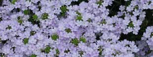

Pretty petunias blanket your beds with lush green leaves and bright blooms in assorted colors. Shown is the Moonlight White Petunia (Mini-Spreading). This variety is fast-growing and produces spectacular blooms. Cut them back in July for blooms that will last into the fall. Full sun to partial shade. Great for border plants or hanging baskets.
Verbena is one of our all-time favorites. The variety shown is Blue Silver. Verbena grows rapidly and is a good choice for butterfly gardens. The plants can spread up to two feet wide, so it makes excellent ground cover. Plant in full sun. Heat resistant. Beautiful also in rock gardens. We have several other varieties equally as beautiful.
Dramatic masses of Lantana display summer color for your beds or containers. The variety shown is Golden Dream. Blooms late spring through early fall. This variety produces outstanding color. Plant in full sun with well-drained soil. We carry tall, dwarf, and trailing varieties. You can also overwinter with cuttings.
Stop by to see us soon. We will be happy to help you with your selections.